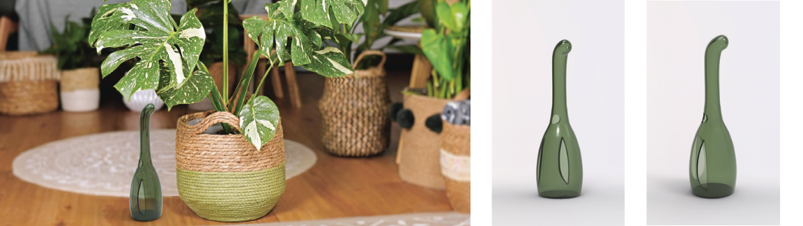

Monsterasaur
The Monsterasaur is designed for a sophisticated client who is a child at heart, Sleek and minimalistic, this watering can is designed to live on the floor amongst monstera plants, reaching up for a tasty leafy snack. The long neck allows for water to reach the soil while avoiding the leaves, Combined with the low handle, watering a monstera has never been this effortless.
While the usual watering can is tucked away, the monsterasaur is designed for functionality while also being a sculptural element to be displayed within the home.
With a capacity of 1.5 Liters, the watering can is manufactured with "Obitech” - a fictional, durable, plastic material that simulates glass.
Modeled with CAD using Solidworks and rendered in Keyshot. Presentation boards designed on Adobe Illustrator.